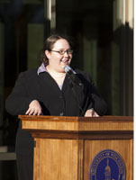
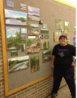
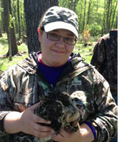

B.S. Wildlife Ecology - Research Management; Minor in Biology - 2013
B.A. Studio Arts - Emphasis in Two Dimensional Art - 2013
Facilitate and problem solve through logistics of merchandise distribution and transfer
Maintain appropriate paperwork for each order accurately, thoroughly filled out and filed correctly
Remain incredibly organized and assist in keeping receiving office in good working order
Provided Excellent customer service to guests and prepared orders to company standards
Maintained a clean, well organized and sanitary store to health code and company standards
Supervised and assigned tasks to team members, placed inventory orders and acted as manager on duty for guest feedback interactions
Hired and supervised a staff of 12 students
Planned, maintained and utilized a budget of $68,000 for programs, payroll and supplies
Facilitated communication between staff members and campus departments
Served as the representative voice of approximately 9,500 students
Met regularly with campus administration, community leaders, faculty and students
Facilitated weekly Senate meetings and worked with faculty and campus departments
Assisted Ph.D. student Johanna Varner, in field research of American pikas in Oregon
Involved in behavior surveys, vegetation and habitat surveys, and thermal sensor deployment
Assisted with the trapping and handling of small mammals
Conducted thorough literature search about pika habitat use and home range analysis
Implemented research project on pika home ranges; analyzed and presented data to a large group of biologists and electrical engineers
Participated in presentation about pika biology at weekend campground ranger talks, including an activity for kids
Collaborated in electrical engineering lab on constraints and specifications of micro sensors
Co-authorship of doctoral thesis by J. Varner et. al. "Plastic Pikas: Behavioral flexibility in low elevation pikas (Ochatona princeps)" (submitted to Animal Behavior summer 2015)
UW-Stevens Point Chancellor's Leadership Award (top 50 student leaders in class): 2013
Xi Sigma Pi - Natural Resources Honor Society - Inducted Spring 2013
UW-Stevens Point University Leadership Award: 2010, 2011, 2012
St. Stephen's Episcopal Church, Edina, MN: High School and Middle School Youth leader, 2013-Present
"Morning After Homecoming" campus and community clean up founder and coordinator, Stevens Point, WI: 2011, 2012
Harmony Care Facilities volunteer visitor, Stevens Point, WI: 2009-2011
Labor of Love voluteer, Stevens Point, WI: 2008-2010
Mastery of Microsoft Office programs
Competent with Arc GIS mapping program, version 9 and 10 updates
Fluency with both Microsoft and Apple operating systems, and Adobe programs
Customer interaction and support; Ability to work well in a group, or alone
Artistic talent and ability to do computer illustrations, graphics and 3D animation
Technical training and experience with biological illustration and photo manipulation
Basic knowledge of HTML and website maintenance
American Red Cross CPR and First Aid certified
Experience and aptitude for public speaking and presentations to large audiences
Participation in and comfort with political process and issue lobbying
Conversational fluency in Spanish
Elizabeth Westberg
8217 Maryland Rd.
Bloomington, MN 55438
ewest081@gmail.com
(612) 508-3116
Education
University of Wisconsin-Stevens Point
Employment
Patina - Minneapolis, MN
Recieving Associate, September 2013-Present
Caribou Coffee - Edina, MN
Shift Supervisor, September 2013-October 2014
Student Government Association, University of Wisconsin - Stevens Point
Chief of Staff, May 2012-May 2013
Student Body Vice President, May 2011-May 2012
Research Experience
University of Utah, Dr. Dearing Biology Lab;
Undergraduate Research Intern, Bridging Ecology and Technology, May-August 2012.
Dr. Denise Dearing's Biology Lab and Dr. Thomas Schmid's Weisel Electrical Engineering Lab